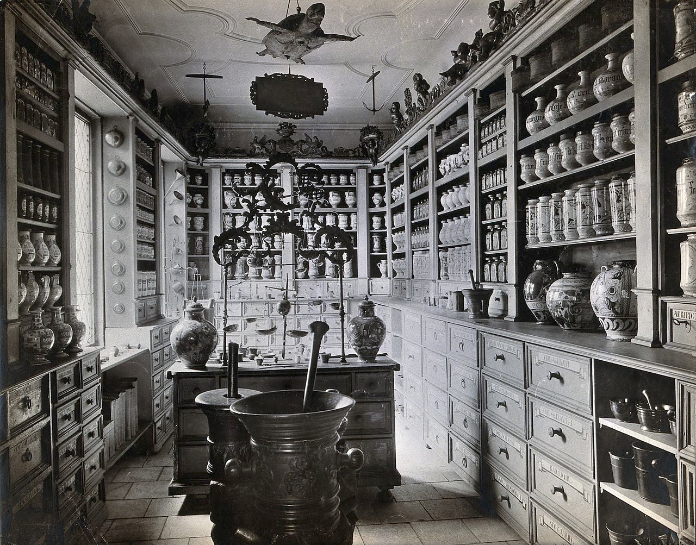
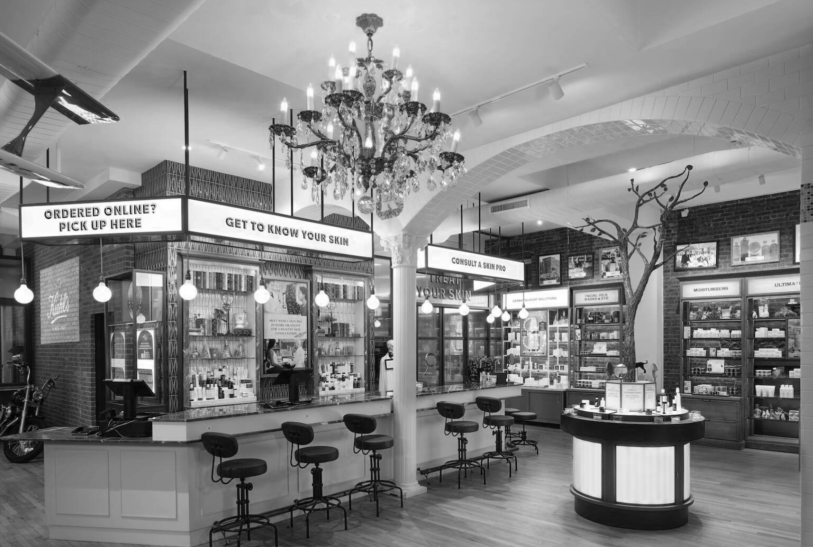
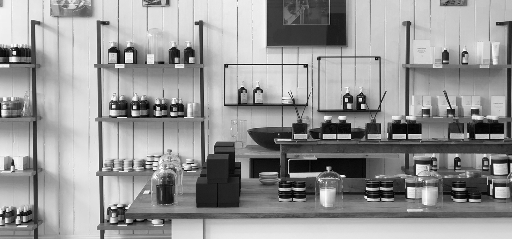

The Foundation
Apothecaries trace their roots to the ancient world, when healers prepared remedies from plants, minerals, and animal products. In early societies—Egypt, Greece, Rome—these proto-pharmacists were respected for their deep knowledge of botany and medicine. By the Middle Ages, apothecaries became distinct from physicians and barber-surgeons, opening shops in bustling towns and cities across Europe. Their counters overflowed with jars of herbs, spices, and mysterious powders. They crafted tinctures, poultices, and elixirs, often by hand, guided by tradition, observation, and a touch of alchemy. The first official apothecary guilds emerged in the 13th and 14th centuries, setting standards for training and practice. Over time, apothecaries evolved into the pharmacists we know today, but their foundation remains the same: a careful blending of science and art, grounded in the belief that nature holds the keys to healing. Their legacy still shapes modern medicine.

Early Expressions
The first physical apothecaries were much more than simple shops—they were the heart of their communities. Emerging in medieval Europe, early apothecaries often occupied small, dimly lit storefronts crowded with shelves of exotic ingredients. Mortars and pestles sat ready for grinding roots and seeds. The apothecary’s counter was a place where townspeople gathered, seeking remedies and advice for everything from fevers to heartbreak. These spaces blended commerce, science, and a bit of theater; the apothecary was equal parts merchant, chemist, and confidante. Records from 13th-century London and Paris reveal how apothecaries became trusted public figures, licensed by city authorities to prepare and sell medicines. Their shops were early laboratories, where experimentation met tradition. The atmosphere was fragrant with dried herbs and spices, and the promise of healing drew people from every walk of life. These first establishments laid the groundwork for the pharmacy as we know it today.

Community Spaces
From the 1400s to the 1940s, apothecaries evolved into vital community spaces—hubs where science, commerce, and daily life intersected. In Renaissance Europe, apothecary shops doubled as gathering spots, where locals exchanged news, debated health fads, and sought counsel. By the 18th and 19th centuries, these shops often featured reading corners, bulletin boards, and even informal clinics. The apothecary became the neighborhood expert, trusted for advice on everything from children’s coughs to family remedies. With the rise of industrial medicine in the late 19th and early 20th centuries, these community spaces adapted, stocking mass-produced patent medicines alongside traditional herbs. Yet the personal touch endured—people still came for conversation, comfort, and a familiar face. Even as the pharmacy profession modernized in the 1940s, the apothecary’s role as a welcoming, communal sanctuary remained a defining legacy, shaping the way we understand healthcare today.
The Fall of the Apothecary
The fall of traditional apothecaries began in the mid-20th century, as chain drugstores like CVS started to reshape the landscape of American pharmacy. With the rise of standardized, mass-produced medications and the spread of suburban shopping centers, the neighborhood apothecary gave way to larger, corporate operations. CVS and its competitors promised convenience, longer hours, and a wider range of products—from prescriptions to toiletries to snacks—all under one roof. The pharmacist’s role shifted from crafting remedies to dispensing prepackaged drugs, and personal relationships with customers often faded into quick, transactional exchanges. The ornate jars and herbal aromas of the old apothecary were replaced by fluorescent lights and endless aisles. While this transformation brought efficiency and accessibility to millions, it marked the end of an era—a move away from the intimate, community-centered spaces that defined healthcare for centuries. The apothecary’s spirit, though, still lingers in the desire for personalized care.


Where to see the practice today
You can still catch glimpses of the classic apothecary in a handful of modern spaces that blend history with contemporary flair. Brands like Kiehl’s—whose flagship storefront in New York pays homage to its 19th-century roots—keep the apothecary spirit alive, with polished glass jars, knowledgeable staff, and a focus on personalized care. Across the world, Santa Maria Novella shops echo the centuries-old traditions of Florentine apothecaries, offering fragrant soaps, herbal remedies, and artisanal perfumes in stunning, museum-like settings. In the Hudson Valley, Cold Spring Apothecary bridges old and new, with a focus on botanically-based wellness and a welcoming, community-oriented atmosphere. These spaces, with their careful attention to detail and sense of hospitality, offer a nostalgic nod to the days when the apothecary was part healer, part confidante, and always a cornerstone of the neighborhood. They remind us that the art of personalized care never truly disappears—it just finds new ways to endure.